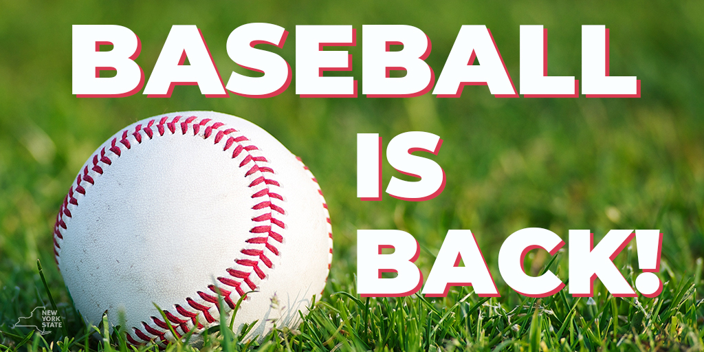

The 2025 MLB season kicked off this past weekend, with the British Baseball season starting this coming weekend (6th April). The Fantasy baseball season is also underway for those who enjoy trying to predict which MLB stars are going to shine, and which are going to implode.
Thanks to our in house scribe, Jake Haggerty, here are some thoughts on the upcoming MLB season. Do you agree? Is anyone going to unseat the Dodgers?
—
It’s been five months since the Los Angeles Dodgers reclaimed the title of Best in the World, defeating the New York Yankees in the 2024 World Series in five. The victory marked their second championship in four years, but for Yankees fans, it was a painful watch—one defined by squandered chances and costly mistakes.
No moment stung more than Game 5, when the Yankees, holding a commanding five-run lead, suffered what would go down as the biggest collapse in World Series history. Defensive miscues only fuelled the disaster—Aaron Judge’s dropped fly ball, Anthony Volpe’s spiked throw to third, and a brutal miscommunication between Gerrit Cole and Anthony Rizzo that should have resulted in a routine out but instead set up the Dodgers’ first run and a bases-loaded nightmare. Against a powerhouse like L.A., there was no coming back from that.
But that was last season. A new year brings new opportunities, fresh faces, and another shot at greatness. As teams report for Spring Training, the 2025 MLB season promises excitement, redemption, and the chance for players to etch their names into history once again.
—
As I start writing this, it’s March 19, 2025—exactly one week until Opening Day. While the official start of the season is still ahead, baseball action has already begun with Spring Training and the highly anticipated international series.
This year, the Dodgers and Cubs kicked things off in Tokyo, Japan, playing a two-game set over the last two days. The Dodgers came away with both wins, defeating the Cubs 4-1 and 6-3, but beyond the scoreboard, these games meant much more. They served as a global showcase for MLB, giving fans around the world a taste of the excitement to come.
For Japanese fans, it was an especially meaningful moment—watching their homegrown stars shine on their own soil. Seiya Suzuki and Yoshinobu Yamamoto put on a show, but it was unsurprisingly Shohei Ohtani who stole the spotlight, homering in the iconic Tokyo Dome, homering in the iconic Tokyo Dome. Beyond the established stars, fans also got their first MLB look at Roki Sasaki, a pitcher many believe is destined to be the league’s next superstar.
Now, with the Tokyo games in the books, all eyes turn to Opening Day. The countdown is officially on.
—
For years, Major League Baseball has been shaped by controversial calls—decisions that altered history and left fans wondering, What if?
Take, for example, Armando Galarraga’s almost-perfect game. On June 2, 2010, Galarraga retired the first 26 batters he faced, standing just one out away from becoming the 21st pitcher in MLB history to throw a perfect game. But history had other plans—not because of his own mistake, but due to a blown call at first base. With two outs in the ninth, Indians batter Jason Donald hit a weak ground ball, and the throw to first easily beat him. Yet first-base umpire Jim Joyce ruled Donald safe. Instant replay showed what millions of fans already knew—Donald was out. The call shattered Galarraga’s perfect game, and though Joyce later admitted his mistake, the damage was done.
Then there’s "The Call"—one of the most infamous umpiring mistakes in baseball history. In Game 6 of the 1985 World Series, the St. Louis Cardinals held a 3-2 series lead over the Kansas City Royals. In the ninth inning, Royals batter Jorge Orta hit a slow ground ball to first baseman Jack Clark, who tossed it to pitcher Todd Worrell covering the bag. It looked like an easy out. But umpire Don Denkinger called Orta safe, despite television replays showing he was clearly out by half a step. The call sparked a Royals rally, leading to a comeback win in Game 6. The momentum completely shifted, and the Cardinals—who had been one win away from a championship—collapsed in Game 7, losing 11-0.
These moments, and many others, remind us of baseball’s human element—the fact that, for better or worse, umpires play a key role in shaping the game’s history.
Let’s talk about today’s game and what’s changed. In recent seasons, we've seen the introduction of instant replay and replay reviews, which gave managers the option to challenge calls—similar to sports like tennis, American football, and cricket. Managers can challenge twice in a game to overturn a call, adding a strategic layer to the decision-making process.
But what’s new for this season? Well, it’s something that fans have been asking for and has taken time to arrive: the automated ball-strike challenge system. This system gives players the ability to challenge any ball or strike call. Once a challenge is made, the ABS system uses a network of cameras around the ballpark to determine where the ball crossed the plate. Much like tennis, an animated replay will appear on the scoreboard to announce the outcome of the challenge.
Given the pressure on umpires to make perfect calls in the past, this system could significantly ease that burden. We got our first taste of the system during Spring Training, but there’s no definitive timeline for its full implementation into the regular season. However, depending on how it’s reviewed across the league following its trial run in Spring Training, it could be in place by 2026.
—
The 2025 MLB season is brimming with exciting storylines, and one of the most intriguing is the MVP race. Oddsmakers have already placed their bets on who will take home the prestigious award this year, and the competition is fierce. In the American League, the likes of Aaron Judge (+300), Bobby Witt Jr. (+310), and Gunnar Henderson (+650) are all leading the charge. With Judge coming off an MVP win in 2024, it’s hard to bet against him. The Yankees’ star finished last season with a stellar .322 batting average, 58 home runs, and played a pivotal role in his team’s World Series run, despite the heartbreaking collapse in Game 5. He’s rightfully considered the favourite for the award.
However, the man who finished as the runner-up in last year’s MVP voting, Bobby Witt Jr., isn’t far behind in the race. After being drafted second overall in 2019, Witt has quickly become one of the most exciting players in the league. He made history by becoming the first shortstop in MLB history to record back-to-back 30-30 seasons in 2023 and 2024. With a .332 batting average and 32 home runs, Witt not only solidified his status as one of the game’s rising stars but also led the Kansas City Royals to their first playoff appearance since 2015. While Judge’s talent and legacy make him a formidable favourite, Witt could be ready to make a run at the award, especially if he can take another step forward in his development this season.—
In the National League, the MVP race is shaping up to be just as thrilling, with the reigning Major League MVP leading the pack. Shohei Ohtani (+145) is once again at the forefront of the conversation, and after hitting a home run in the Tokyo Series, he’s looking primed for another stellar season. Ohtani made history last year as the first player ever to record a 50/50 season, solidifying his place among the game’s all-time greats. He finished the season with a remarkable .310 batting average and 54 home runs, while also leading the Los Angeles Dodgers to the World Series title in his first season with the team.
It’s nearly impossible to bet against Ohtani, and if I could place all my money on him winning the MVP again, I’d do so without hesitation. However, there’s still plenty of astonishing talent trailing him in the odds. Juan Soto (+550), the star who made waves this offseason with his blockbuster $765 million, 15-year contract with the Mets, will
be looking to cement his place in Mets history and lead them to their first World Series win in nearly 40 years. Soto had a strong season last year, posting a .288 batting average and 41 home runs, and like Judge, played a crucial role in his team's playoff run.
While it will likely take a historic season for Soto to edge out Ohtani for the MVP, New York’s Broadway stage will certainly be watching closely. Soto will need to perform at the highest level all season long to make a strong case for the award, but one thing is for sure: the spotlight will be on him as he tries to bring a championship to the Mets and prove himself yet again as one of the game’s elite players.
—
As we gear up for the 2025 season, it’s clear that this year is poised to deliver unforgettable moments that will bring both tears and joy to fans and players alike. There are questions that will be answered by October: Will anyone dethrone the Dodgers from their top spot? Who will take home the major awards? And which player will emerge as this season’s breakout star? While these questions remain unanswered, it’s this uncertainty that adds to the excitement of the season ahead. Teams are making final adjustments to ensure a smooth ride, fans are preparing their fantasy teams, and come Thursday, March 27th, it will all kick off with Opening Day. The wait is almost over, and baseball is back!